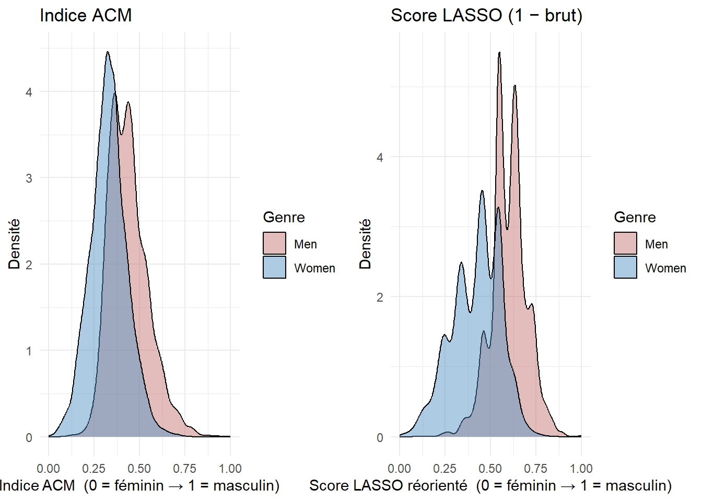

Mesurer l’identité de genre
Comment passer d’une case à cocher à un spectre continu
Le problème : l’identité n’est pas binaire
Dans les enquêtes classiques, le genre est une variable à deux modalités : homme / femme. C’est pratique pour les statistiques, mais c’est une simplification du réel. L’identité de genre est mieux décrite comme un spectre continu allant d’un pôle féminin à un pôle masculin — avec la plupart des individus quelque part entre les deux.
Les individus sont dispersés sur tout le spectre — y compris des femmes proches du pôle masculin et des hommes proches du pôle féminin.
L’ACM en trois étapes
1
On part des 24 pratiques
Chaque individu est décrit par 24 variables binaires : fait / ne fait pas chaque pratique.
TricotJeux vidéoCuisinePêche
Alex1010
Sam0110
Jordan0101
↓
2
L'ACM trouve la structure dominante
La méthode cherche l'axe qui résume le mieux les co-participations. Le premier axe capture la principale opposition dans les données.
↓
3
On projette chaque individu sur cet axe
Chaque répondant reçoit un score entre 0 (pôle féminin) et 1 (pôle masculin). C'est son indice d'identité continu.
Deux indices disponibles dans ce projet
Dans cette recherche, deux méthodes ont été utilisées pour construire l’indice continu.
WarningAttention aux orientations
Les deux indices n’ont pas la même orientation :
indice_ACM_norm: 0 = féminin, 1 = masculinscore_LASSO_norm(brut) : 0 = masculin, 1 = féminin ← sens inverse !
Pour les comparer, on utilise 1 − score_LASSO_norm, ce qui le remet dans le même sens que l’ACM.
indice_ACM_norm
Analyse des Correspondances Multiples
- Méthode exploratoire : l’axe émerge des données
- Capture la structure globale des co-participations
- 0 = pôle féminin · 1 = pôle masculin
→ Détails sur le site dédié à la construction des indices
score_LASSO_norm
Régression LASSO
- Méthode supervisée : prédit le sexe déclaré
- Sélectionne les pratiques les plus discriminantes
- 0 = pôle masculin · 1 = pôle féminin ← inversé !
→ Pour comparer, on utilise 1 − score_LASSO_norm
Une validation graphique
Les deux distributions (une fois le LASSO réorienté) doivent montrer les femmes concentrées à gauche et les hommes à droite — avec un chevauchement substantiel.
Le chevauchement entre les deux distributions justifie le passage au continu : une part substantielle des répondants occupe des positions que leur genre déclaré ne prédit pas.
Comment construire un indice continu à partir des pratiques ?
L’idée centrale : si certaines pratiques sont très typiquement masculines et d’autres très typiquement féminines, alors le profil de pratiques d’un individu révèle sa position sur le spectre identitaire.
Quelqu’un qui tricote, cuisine et tient un journal intime a un profil de pratiques typiquement féminin → position proche du pôle féminin. Quelqu’un qui joue aux jeux vidéo, fait du bricolage et pêche → position proche du pôle masculin.
Cette intuition est formalisée par une méthode statistique appelée Analyse des Correspondances Multiples (ACM).